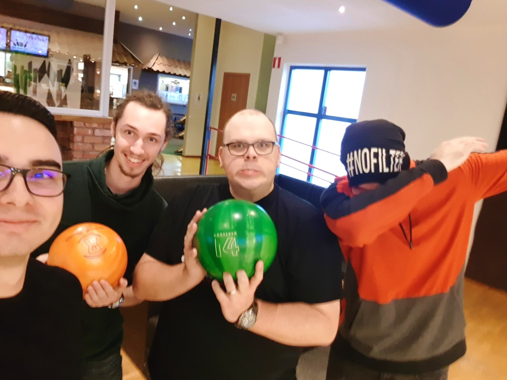

My report page in the course XXX

My name is Kristian Kokoneshi.I was born and raised in Divjake, a small city in western Albania. During the gymnasium, I have played football and volleyball. I've been working as a volunteer in election center's IT department. I came to Sweden in 2016, with the intention to pursue univeristy studies. I study Software Development at Kristianstad University and am currently in my final year of studies.
Programming has always been an interest of mine, ever since I got my first computer. I have always wanted to know how computers work and how they were built.
My hobbies include programming, watching movies, bowling and travelling. I have been to 12 european cities so far. If I had to choose my favourite city, it would be Vienna.